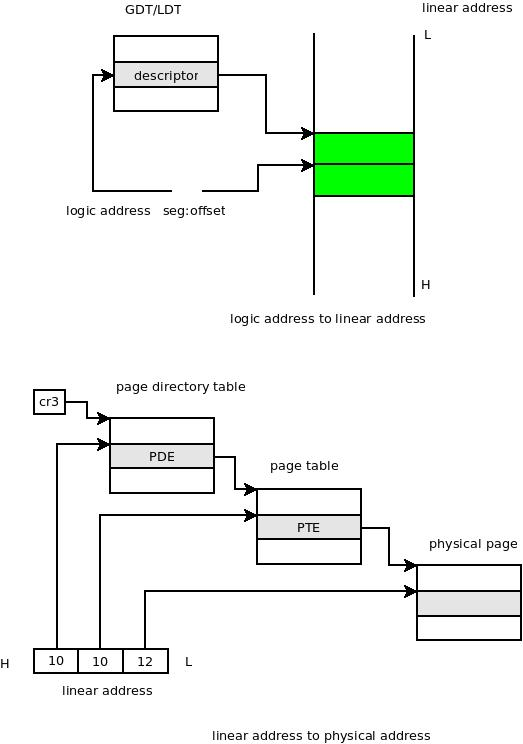
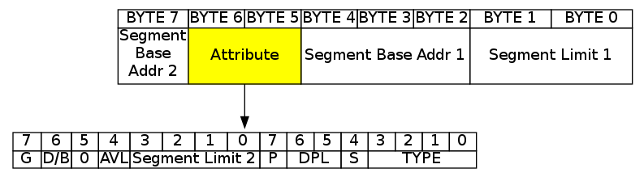
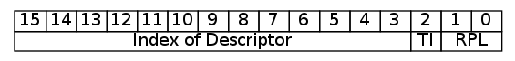

Table of Contents
Under IA32, CPU works with two mode called Real Mode and Protect Mode. In Real Mode, it supports 16-bits register, 16-bits data bus, 20-bits address bus, and 1 MB addressing limit.
Given Logic Address "Segment:Offset", compute Physical Address according to "Physical Address = Segment * 16 + Offset".
But in Protect Mode, things become a little differnt. It also use "Segment:Offset" to describe Logic Address, but the value of the Segment is a index(Selector) point to an entry in a table. This entry defines the start address of "Segment", with address limt, attribution, and so on. We call the entry "Descriptor", and the table "GDT" (GDT, it's short for Global Descriptor Table).
With 32-bits Address Bus, the Address Space in Protect Mode could become 4GB.
We have learnt how logic Address map to linear address in protect mode. There still is a question how linear address map to physical address. First, we give a quick look of "Addressing at Protect Mode"
So, we can see that the 32-bits linear address splits into 3 parts. High 10-bits means the offset of Page Directory Table(PDT). The Page Directory Entry(PDE) in PDT is address of a Page Table(PT). So with the High 10-bits, we can find the PT. And the middle 10-bits means offset of the found PT. The Page Table Entry(PTE) in PT is the address of Physical Page. SO with the Middle 10-bits, we can find the Physical Page. And the Low 12-bits is the offset of Physical Page, the content there is the final Physical Address.
Here is structure of Descriptor.
It is 8-Bytes structure, "Segment Base Address" split into 2 parts, and so does the "Segment Limit".
It also has some attributions, I will introduce it.
| Value | S=1 | S=0 |
|---|---|---|
| 0 | read only | undefined |
| 1 | read only, accessed | 286TSS |
| 2 | read/write | LDT |
| 3 | read/write, accessed | busy 286TSS |
| 4 | read only, expand-down | 286 call gate |
| 5 | read only, expand-down, accessed | task gate |
| 6 | read/write, expand-down | 286 interrupt gate |
| 7 | read/write, expand-down, accessed | 286 trap gate |
| 8 | execute only | undefined |
| 9 | execute only, accessed | 386TSS |
| A | execute/read | undefined |
| B | execute/read, accessed | busy 386TSS |
| C | execute only, conforming code segment | 386 call gate |
| D | execute only, conforming code segment, accessed | undefined |
| E | execute/read, conforming code segment | 386 interrupt gate |
| F | execute/read, conforming code segment, accessed | 386 trap gate |
And here is struct of Selector.
It is a 16-Bits structurre. Because the size of Descriptor is 8, so the low 3-bits of Selector can be used as attribution.